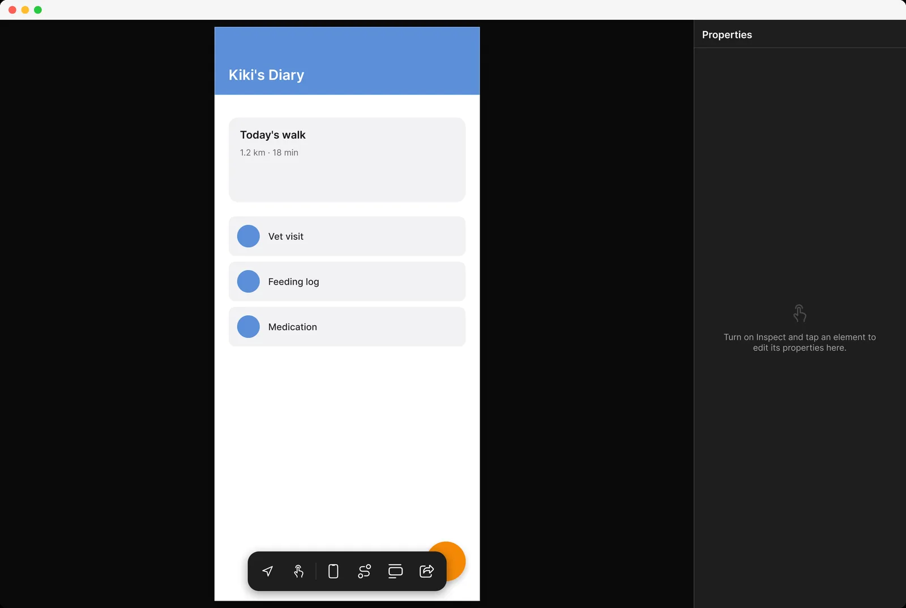
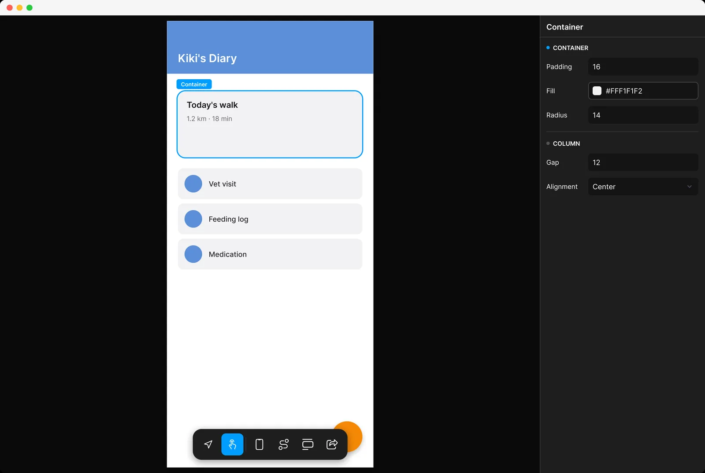
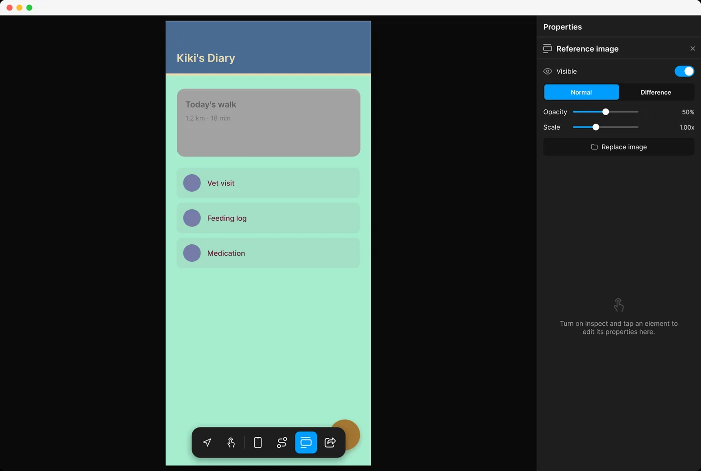
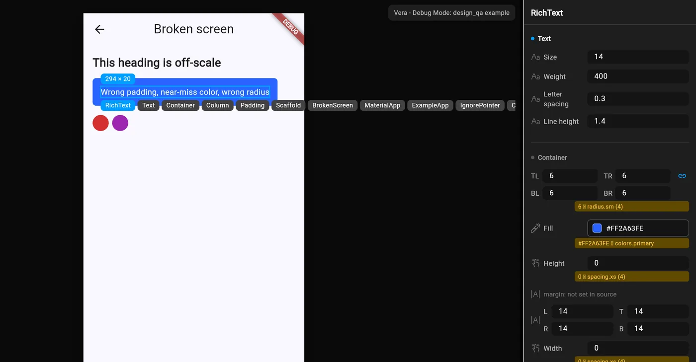
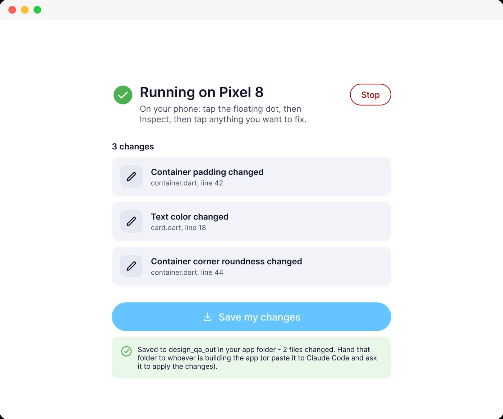
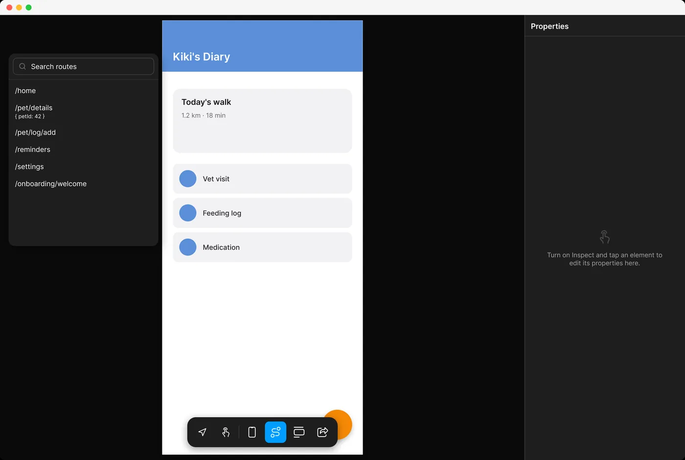
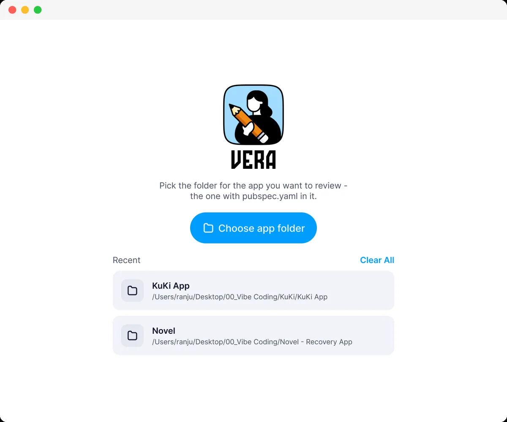

Fix the design, not the prompt.
Vera is a debug-only overlay for Flutter. Tap any widget on the running app, correct it by hand, and export the change as a real source patch. No describing a pixel in English. No waiting on a rebuild.


You asked for 24. You got 20.
Not wrong enough to catch in review. Wrong enough to feel cheap in the hand. And the loop for fixing it is worse than the bug.
-
The screen arrives all at once
AI writes the whole thing in one pass. There is no moment where you were building it component by component, checking each against the file.
-
The comparison step quietly disappears
The Figma-versus-build check used to happen naturally, because you were the one placing every value. Now nobody is holding both.
-
Drift ships
Spacing lands at 20 → spacing.lg (24), a near-miss colour passes for the token, a radius is off by two. Nobody notices until someone opens the app.
-
Fixing it means describing a pixel in English
Write the prompt. Wait for the rebuild. Squint. It's closer. Write another prompt. This is the loop Vera deletes.
You already know what's wrong. You can see it. Vera lets you just go and fix it, on the running app, and keeps the receipt as code.
The whole loop, start to finish.
Inspect, select, correct, export. No terminal, no rebuild, no prompt.
Sound off · about 30 seconds
Built for the person who can see the problem.
Every control edits the real widget on the real device. Nothing here is a mockup of your app — it is your app.
Tap it, then fix it
Turn on inspect and tap anything on screen. You get a live property panel
bound to that widget's actual RenderObject: padding, colour,
radius, gap, alignment, type. Change a number and the app changes under
your finger.

Put the design on top of the build
Pin your Figma export straight over the running screen. Normal blend to eyeball it, difference blend to make disagreement literally glow. Opacity and scale are yours. It's the comparison step, handed back to you.

Off-token values flag themselves
Vera reads your token scale and marks anything that misses it: the amber
rows. A radius of 6 where your scale says 4, a colour one hex step off
colors.primary. Each one carries its own correction, one tap
to apply.

Export as source, not as notes
Every edit is recorded against the file and line it came from, then written out as an actual patch to your Dart source, parsed and rewritten at the AST level, not string-replaced. Hand the folder to a developer, or paste it to Claude Code and ask it to apply.

Jump straight to the screen
Checking the empty state of a screen four taps deep shouldn't cost four taps every time. Vera scans your routes on setup and lets you jump to any of them, arguments included.
It cannot ship to your users.
DesignQA.wrap is a kDebugMode branch. In release
and profile builds it returns your widget untouched and the entire overlay
is unreachable code, which the Dart AOT compiler removes rather than
merely skips. We measured it instead of claiming it.
With DesignQA.wrap | 6,906,368 bytes |
|---|---|
| Without | 6,906,368 bytes |
Byte-for-byte identical.
Three commands, then you're inspecting.
Works on any Flutter project. No app-code changes beyond one wrapper call.
Add the package
A dev dependency. It never enters your release dependency graph.
Wrap one line
init finds your main(), shows you the diff, and
asks before touching anything. It also pre-fills your token config from
whatever colour and spacing constants you already have.
Run and start fixing
Tap the floating dot on your device, hit Inspect, and tap whatever looks wrong.
# 1 · add it as a dev dependency
flutter pub add --dev design_qa
# 2 · wrap your app (shows a diff, asks first)
dart run design_qa:init
# 3 · run with widget tracking on
flutter run --track-widget-creation
--track-widget-creation is not optional. Without
it Vera can't map a tapped widget back to a line in your source, and inspect
mode stays off with a banner telling you exactly that.
Or skip the terminal entirely
The macOS companion app does all three steps for you: point it at a project folder, it works out the entry point, shows you the change it wants to make, picks a device, and launches. When you're done it writes the patches out.

Go and fix it.
Vera is open source and early. If you build with AI and care how the result actually looks, it was written for you.
flutter pub add --dev design_qa
dart run design_qa:init
flutter run --track-widget-creationTell me what breaks
Especially: which widgets it fails to map, what your token setup looks like, and where it guessed wrong about your project. Workflow notes from people using AI to build are the most useful thing you can send: open an issue.